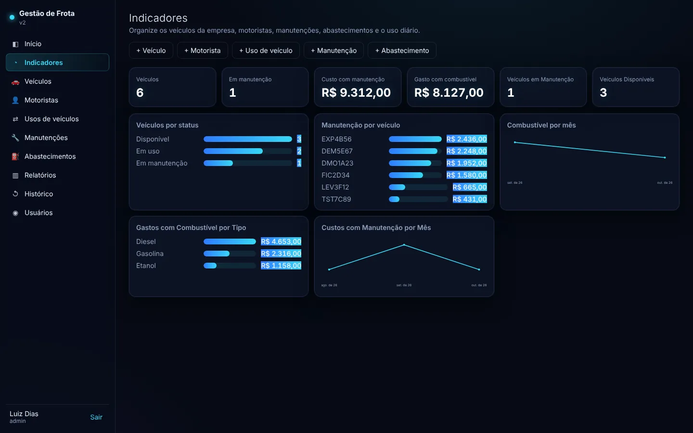

informação espalhada em planilhas→Dados centralizados
Uma base única por processo, com histórico, anexos e consulta por registro, em vez de arquivos separados consolidados à mão.
Transformo processos manuais em fluxos digitais organizados.
Trabalho como jovem aprendiz na DIME Distribuidora desde janeiro de 2026. No setor de frota, os controles ficavam espalhados em planilhas, então comecei a desenvolver sistemas para resolver isso. Hoje são cinco, em quatro áreas da empresa. Também desenvolvo o ORION, um assistente que cria sistemas a partir de pedidos em linguagem natural. Curso Análise e Desenvolvimento de Sistemas na UNISUAM (5º período).

Estes problemas apareceram na operação de uma distribuidora, mas existem em empresas de qualquer setor. Cada um aponta para o projeto em que foi tratado.
Uma base única por processo, com histórico, anexos e consulta por registro, em vez de arquivos separados consolidados à mão.
Comissões, consumo médio e leitura de documentos feitos pelo sistema com regras definidas, reduzindo trabalho repetitivo.
Assinatura digital, fotos, vídeo e trilha de alterações ligados a cada registro: o que aconteceu, quando e por quem.
Um pedido em linguagem natural vira especificação, código, testes e sistema no ar, pronto para ser ajustado por conversa.
Cada ficha mostra o período documentado, a situação atual e a minha contribuição. As demonstrações usam empresa e dados fictícios.
Os controles do setor ficavam em planilhas separadas. Consolidar dados era manual, prazos dependiam de conferência e o histórico de cada item estava espalhado.
Informações do setor em um só lugar, rastreabilidade de quem alterou cada registro e relatórios mensais gerados pelo próprio sistema.
Entrar na demo: qualquer usuário e senha

Era preciso saber quem estava com cada carro, por onde passou e ter comprovação da retirada e da devolução.
Retiradas e devoluções sem papel, visão dos carros em uso e histórico por veículo e por condutor.
Controle: admin@exemplo.com · Condutor: condutor@exemplo.com · qualquer senha

O relatório de vistoria era um documento estático. Fotos, não conformidades, prazos e verificação de eficácia não ficavam ligados nem eram acompanhados de forma centralizada.
Registros padronizados, evidências ligadas a cada não conformidade e relatório pronto sem montagem manual.
Entrar na demo: qualquer e-mail e senha

Avarias e ocorrências eram difíceis de comprovar depois: faltava registrar o estado do veículo na chegada e guardar fotos, vídeos e documentos junto do caso.
Registros padronizados com evidência, consultáveis no sistema principal.

Serviços de motoristas agregados, CIOTs, ocorrências e o cálculo da remuneração precisavam ser organizados e conferidos manualmente.
Ainda em desenvolvimento. Na demonstração, as regras de remuneração já são aplicadas de forma padronizada.
Entrar na demo: qualquer e-mail e senha

Critério de consumo médio ponderado (km/L) e regras para descartar leituras de hodômetro inconsistentes, com relatórios para a gestão.
Reconhecimento de texto em notas fiscais de serviço para localizar as placas dos veículos, sem conferir documento por documento.
Assistente que gera sistemas completos a partir de um pedido em linguagem natural. Detalhes logo abaixo.
O ORION é o projeto em que levo a automação um passo adiante: em vez de construir cada sistema à mão, construo o assistente que os constrói.
A partir de um pedido como “faça um sistema completo de gestão de frota”, o ORION define a estrutura, gera o código, testa o resultado e coloca o sistema no ar no próprio computador. Depois, aceita mudanças por conversa (“adicione o campo X”, “crie um relatório de Y”) e guarda cada versão.
custom/ nunca é sobrescrito.11/10/2026 16:11 pedido “faça um sistema completo de gestão de frota” 11/10/2026 16:11 build Versão 1: Veículos, Motoristas, Usos, Manutenções, Abastecimentos, com login 11/10/2026 16:11 test 45/45 verificações passaram 11/10/2026 16:12 run No ar em 127.0.0.1:3807 11/10/2026 16:12 change Visual: escuro, ciano, painéis translúcidos 11/10/2026 16:15 change Novos indicadores e gráfico de combustível 11/10/2026 16:15 test 45/45 verificações passaram stack gerada Node.js 22 · SQLite · HTML/CSS/JS sem dependências regras retorno ≥ saída · km retorno ≥ km saída · valor > 0
spec.json.“não quero um sistema simples, faça algo complexo”pedido real → sistema de despesas com relatórios, login e perfis · 23/23 testes
Datas tiradas dos arquivos de cada projeto (outubro de 2026). As capturas ao lado são do sistema de frota gerado pelo ORION, rodando com dados de teste.

A experiência na DIME Distribuidora foi onde aprendi a enxergar processos de dentro: primeiro executando, depois identificando o que travava e construindo a solução.
Em vez de uma lista solta, a tabela liga cada competência aos projetos que a comprovam.
| frota | passeio | qualidade | checklists | agregados | orion | |
|---|---|---|---|---|---|---|
| Análise de processosmapear a rotina e achar o gargalo | ||||||
| Digitalização de controlesdo papel e da planilha para o sistema | ||||||
| Automação de cálculos e alertasregras aplicadas pelo sistema | ||||||
| Estruturação de fluxosetapas, status e responsáveis | ||||||
| Rastreabilidade e evidênciashistórico, anexos, auditoria | ||||||
| Integração de ferramentas e IAbanco, armazenamento, mapas, modelos de IA |
UNISUAM · 5º período · previsão jul/2027
guilhermeluiz671@gmail.com